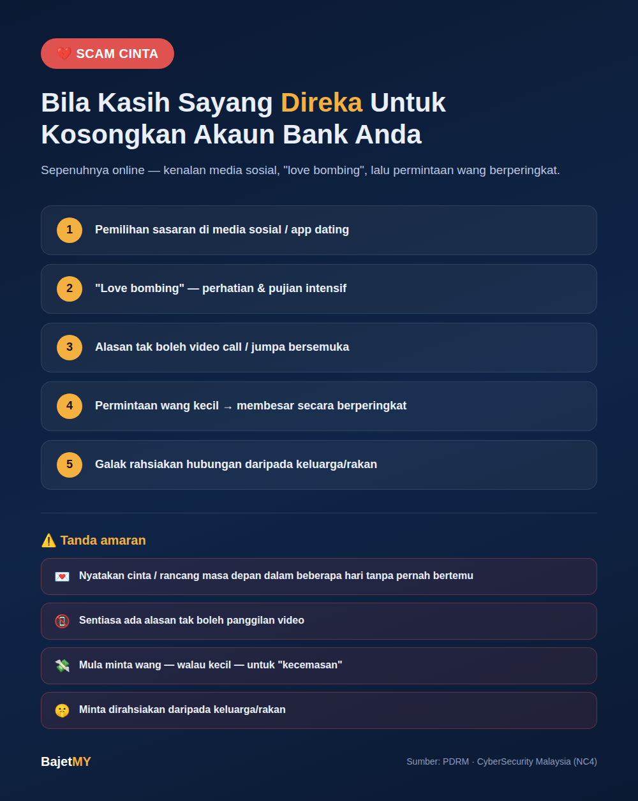

Ia bermula dengan mesej mesra di Facebook, Instagram, atau aplikasi dating. Perbualan jadi rapat dalam masa singkat — panggilan video jarang atau tak pernah berlaku sebab "signal teruk" atau "kerja di luar negara". Beberapa minggu kemudian, satu permintaan kecil muncul: tambang penerbangan, yuran kastam untuk parcel, atau bantu selesaikan "kecemasan". Itu bukan cinta — itu scam cinta (romance scam), dan ia salah satu scam kewangan paling menghancurkan dari segi emosi dan wang di Malaysia hari ini.
Bagaimana scam cinta beroperasi
Scam cinta biasanya melalui beberapa fasa yang direka dengan teliti:
1. Pemilihan sasaran Penipu menyasarkan profil media sosial yang menunjukkan tanda kesunyian, baru bercerai/kematian pasangan, atau aktif di aplikasi dating.
2. "Love bombing" Perhatian intensif dan pujian berlebihan dalam masa singkat — mesej sepanjang hari, panggilan suara kerap, janji masa depan bersama. Ini reka bentuk sengaja untuk bina ikatan emosi pantas sebelum mangsa sempat berfikir kritis.
3. Alasan tak boleh jumpa/video call Watak biasa: askar/tentera bertugas luar negara, jurutera minyak di pelantar (oil rig), doktor dalam misi kemanusiaan. Semua alasan ini menerangkan kenapa tiada panggilan video jelas dan kenapa perlu "sabar" sebelum bertemu.
4. Kecemasan atau permintaan berperingkat Permintaan pertama biasanya kecil ("tolong bayar bil hospital anak saya") untuk uji kesediaan mangsa. Jika berjaya, permintaan seterusnya membesar — yuran kastam parcel mahal, "cukai" untuk keluarkan wang tersekat, atau pelaburan bersama (kombinasi dengan scam pelaburan, dikenali sebagai pig butchering scam).
5. Isolasi sosial Penipu sering menggalakkan mangsa rahsiakan hubungan daripada keluarga/rakan — supaya tiada sesiapa sempat beri amaran atau nasihat objektif.
Tanda amaran scam cinta
- ⚠️ Nyatakan cinta atau rancang masa depan dalam masa beberapa hari/minggu tanpa pernah bertemu
- ⚠️ Sentiasa ada alasan kukuh kenapa tidak boleh panggilan video atau bertemu bersemuka
- ⚠️ Profil/gambar kelihatan terlalu sempurna — cuba buat carian imej terbalik (reverse image search) untuk semak kesahihan
- ⚠️ Mula minta wang — walau kecil pada mulanya — untuk "kecemasan", tambang, atau yuran
- ⚠️ Menggalakkan pindah perbualan ke platform peribadi (WhatsApp/Telegram) dengan cepat
- ⚠️ Minta dirahsiakan daripada keluarga/rakan
- ⚠️ Ajak sertai "peluang pelaburan" bersama — tanda kombinasi dengan scam pelaburan
Kenapa ramai terjebak walaupun bijak
Scam cinta bukan tentang kebodohan mangsa — ia direka khusus untuk mengeksploitasi keperluan asas manusia untuk disayangi dan didengari. Penipu sering:
- Meluangkan berbulan-bulan membina kepercayaan sebelum minta wang pertama
- Guna skrip psikologi yang telah terbukti berkesan merentas ribuan mangsa
- Menyasarkan waktu mangsa paling terdedah secara emosi (kesunyian, kehilangan pasangan, tekanan hidup)
Cara lindungi diri
- Buat carian imej terbalik untuk gambar profil sebelum percaya sepenuhnya — ramai scam guna gambar orang lain yang dicuri
- Insist panggilan video awal dan perhatikan sebarang alasan berulang untuk mengelaknya
- Jangan sesekali hantar wang kepada seseorang yang belum pernah anda temui secara bersemuka
- Berkongsi dengan keluarga/rakan tentang hubungan baru — pandangan luar sering kesan tanda bahaya yang anda mungkin terlepas pandang kerana terlibat emosi
- Waspada bila diminta rahsiakan hubungan — ini corak kawalan biasa dalam scam cinta
- Semak nombor akaun bank/e-wallet yang diminta terhadap senarai laporan scam awam sebelum buat pemindahan
Dah terlanjur hantar wang?
Segera hubungi bank untuk cuba sekat/tarik balik pemindahan, simpan semua bukti perbualan dan bukti pemindahan, dan buat laporan polis serta laporan kepada Pusat Respons Siber Kebangsaan (NC4 / CyberSecurity Malaysia). Jangan biarkan rasa malu menghalang anda melaporkan — semakin awal dilaporkan, semakin tinggi peluang bank/pihak berkuasa boleh bertindak.
Ringkasan
Scam cinta mengeksploitasi keperluan emosi manusia melalui hubungan yang direka sepenuhnya secara online — lengkap dengan "love bombing", alasan tidak boleh bertemu, dan permintaan wang berperingkat. Tanda paling jelas: seseorang yang belum pernah anda temui bersemuka mula minta wang, walau atas alasan sekecil mana pun. Sentiasa insist panggilan video, jangan rahsiakan hubungan baru daripada orang tersayang, dan jangan sesekali hantar wang kepada seseorang yang wujudnya hanya di skrin telefon anda.
Sumber
- Polis Diraja Malaysia (PDRM) — Amaran Scam Cinta / Romance Scam
- CyberSecurity Malaysia — Pusat Respons Siber Kebangsaan (NC4)